Bem-vindo ao Jogo "5 Sentidos"!
Introdução: O jogo "5 Sentidos" é uma atividade lúdica desenvolvida para crianças, cujo objetivo é incentivar o aprendizado sobre frutas, verduras e legumes de uma forma divertida e interativa.
É uma maneira alternativa de explorar o mundo dos alimentos e aprender sobre suas características, propriedades e benefícios para a saúde!
Instruções do Jogo: Cada criança sorteia uma ficha contendo um dos cinco sentidos: visão, audição, tato, paladar ou olfato.
Com base no sentido sorteado, o organizador apresenta um alimento a criança e ela deve adivinhar qual é, contudo deve utilizar apenas o sentido indicado.
Após a resposta, certa ou errada, o organizador revela informações curiosas e nutritivas sobre o alimento escolhido.
Frutas
Banana

Banana
Rica em potássio, a banana ajuda no controle da pressão arterial e no equilíbrio dos líquidos do corpo.
Fonte de energia rápida, também é uma ótima aliada para quem pratica esportes.
Contém vitamina B6, importante para o cérebro. Curiosidade: quanto mais madura, mais doce!
Manga
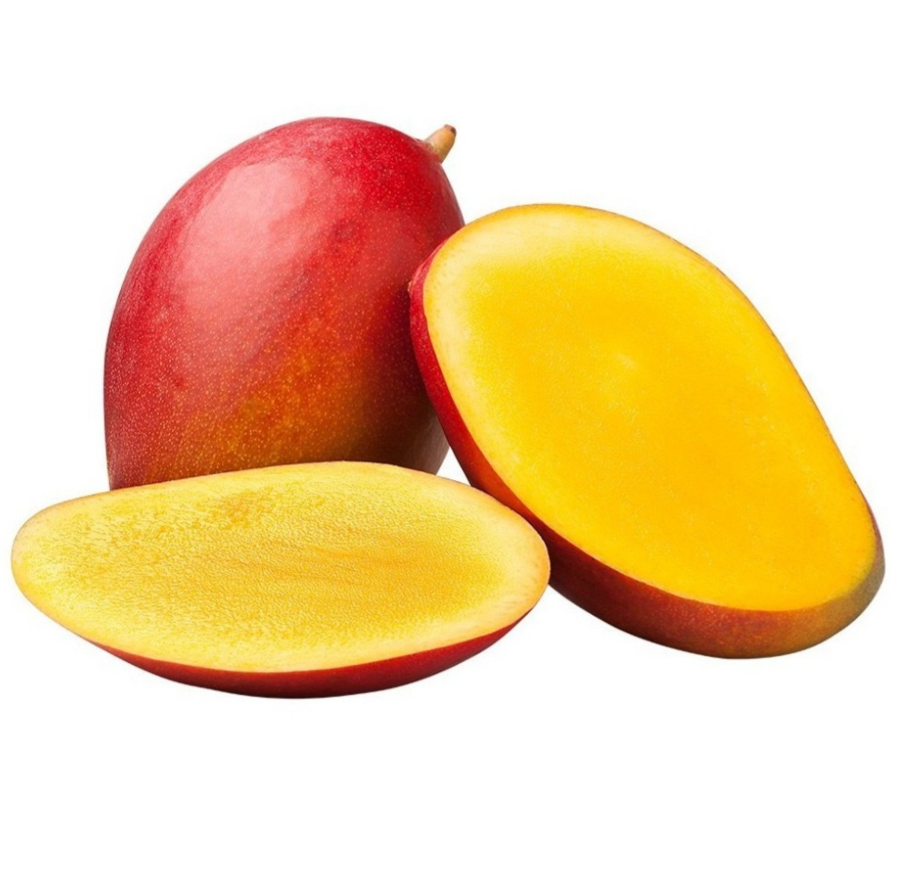Manga
Cheia de vitamina C, que fortalece o sistema imunológico, e vitamina A, essencial para a visão.
Ela também contém fibras que auxiliam na digestão.
Curiosidade: existem muitos tipos de manga, como a Palmer e a Tommy.
Maracujá
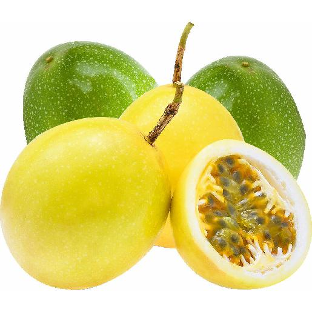Maracujá
Conhecido por seu efeito calmante, devido à presença de substâncias que relaxam.
Ele é rico em vitamina C e antioxidantes, que ajudam a proteger o corpo.
Curiosidade: a casca pode ser usada em receitas saudáveis, como farinha!
Tomate
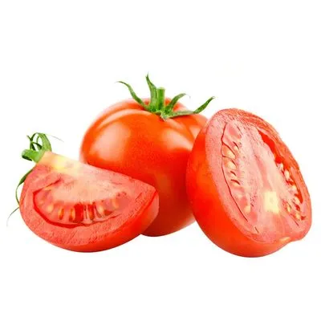Tomate
Embora seja comumente tratado como legume, o tomate é uma fruta!
Rico em licopeno, um antioxidante que ajuda na saúde do coração.
Também possui vitamina C e potássio.
Curiosidade: tomates de diferentes cores têm diferentes nutrientes.
Abacaxi
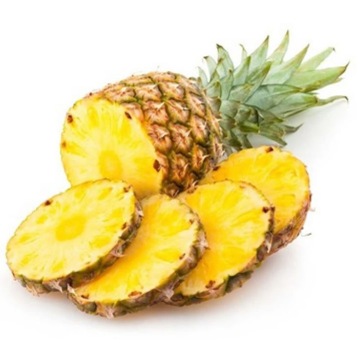Abacaxi
Refrescante e tem bromelina, uma enzima que ajuda na digestão de proteínas.
É uma excelente fonte de vitamina C.
Curiosidade: abacaxi e água podem fazer uma ótima bebida natural!
Uva

Uva
Rica em antioxidantes, especialmente nas cascas escuras, a uva ajuda a proteger o coração.
Contém vitamina K, importante para a coagulação do sangue.
Curiosidade: o suco de uva integral tem os mesmos benefícios da fruta in natura.
Kiwi
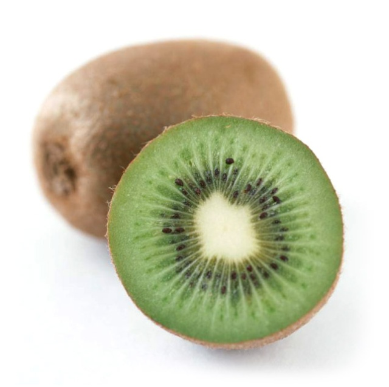Kiwi
Essa frutinha verde é um verdadeiro tesouro de vitamina C, fortalecendo o sistema imunológico.
Também é rica em fibras, o que ajuda a manter o intestino saudável.
Curiosidade: o kiwi também pode ser marrom ou dourado por dentro!
Mamão

Mamão
Contém papaína, uma enzima que ajuda na digestão.
É rico em vitamina A, importante para a saúde dos olhos, e em fibras, que melhoram o trânsito intestinal.
Curiosidade: o mamão também é conhecido por ser um ótimo remédio natural para prisão de ventre.
Melão
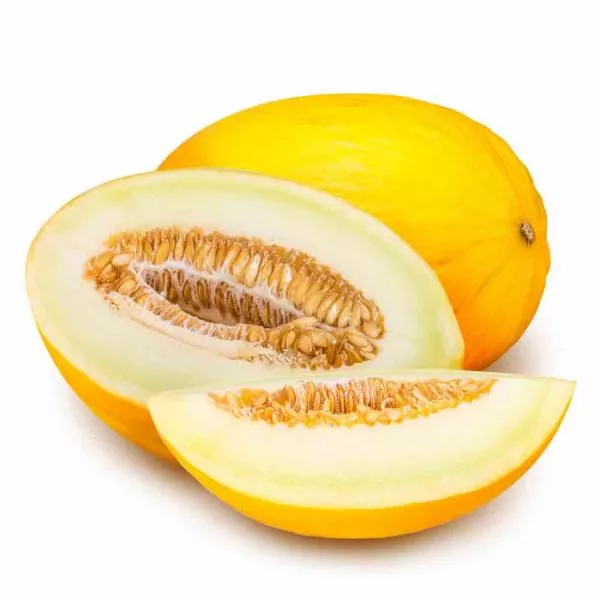Melão
É hidratante, pois tem alta quantidade de água.
É uma excelente fonte de vitamina C e antioxidantes.
Curiosidade: o melão tem diversos tipos, como o amarelo e o cantaloupe.
Limão
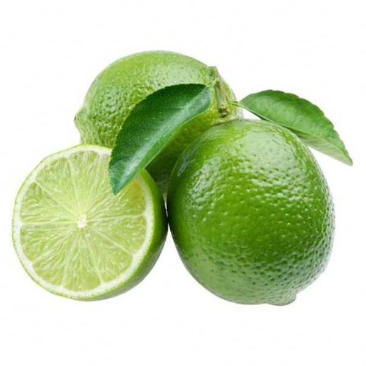Limão
Rico em vitamina C, que fortalece a imunidade e combate o envelhecimento precoce.
Ele também ajuda na digestão e é muito usado em sucos e temperos.
Curiosidade: suco de limão com água morna é uma boa maneira de começar o dia!
Maçã

Maçã
Rica em fibras, que ajudam na digestão, e contém antioxidantes que protegem as células.
Também tem vitamina C.
Curiosidade: a casca da maçã tem muitos nutrientes, então não é bom descascar!
Goiaba
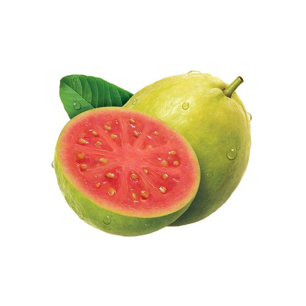Goiaba
Rica em vitamina C, a goiaba ajuda a fortalecer o sistema imunológico.
Também contém fibras que melhoram a digestão.
Curiosidade: a goiaba pode ser vermelha ou branca por dentro, e ambas são deliciosas!
Laranja
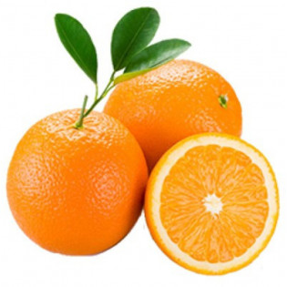Laranja
Cheia de vitamina C, a laranja fortalece a imunidade e melhora a absorção de ferro pelo corpo.
É também uma boa fonte de fibras.
Curiosidade: o suco de laranja natural é uma bebida clássica no café da manhã!
Morango
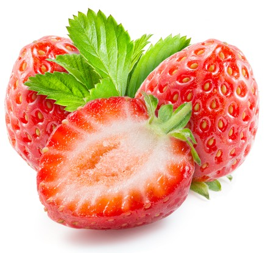Morango
Rico em vitamina C, importante para a saúde da pele e sistema imunológico.
Também contém antioxidantes como antocianinas, que ajudam na prevenção de doenças cardíacas e câncer.
Curiosidade: não são considerados "bagas" botânicas, pois suas sementes estão do lado de fora da fruta.
Pera

Pera
Fonte de fibras, auxiliando na digestão e no controle dos níveis de açúcar no sangue.
Contém vitamina C e K, que são importantes para o sistema imunológico e a coagulação sanguínea.
Curiosidade: existe uma grande variedade de tipos de pera, como a asiática e a europeia.
Verduras e Legumes
Batata
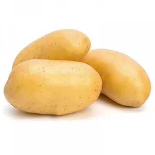Batata
Fonte de carboidratos, fornecendo energia.
Contém vitamina C e potássio.
Curiosidade: existem muitos tipos de batatas, como a doce e a inglesa.
Abobrinha
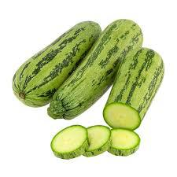Abobrinha
Tem poucas calorias e é rica em água.
Contém vitamina C e minerais como potássio.
Curiosidade: pode ser consumida tanto crua quanto cozida.
Pimentão
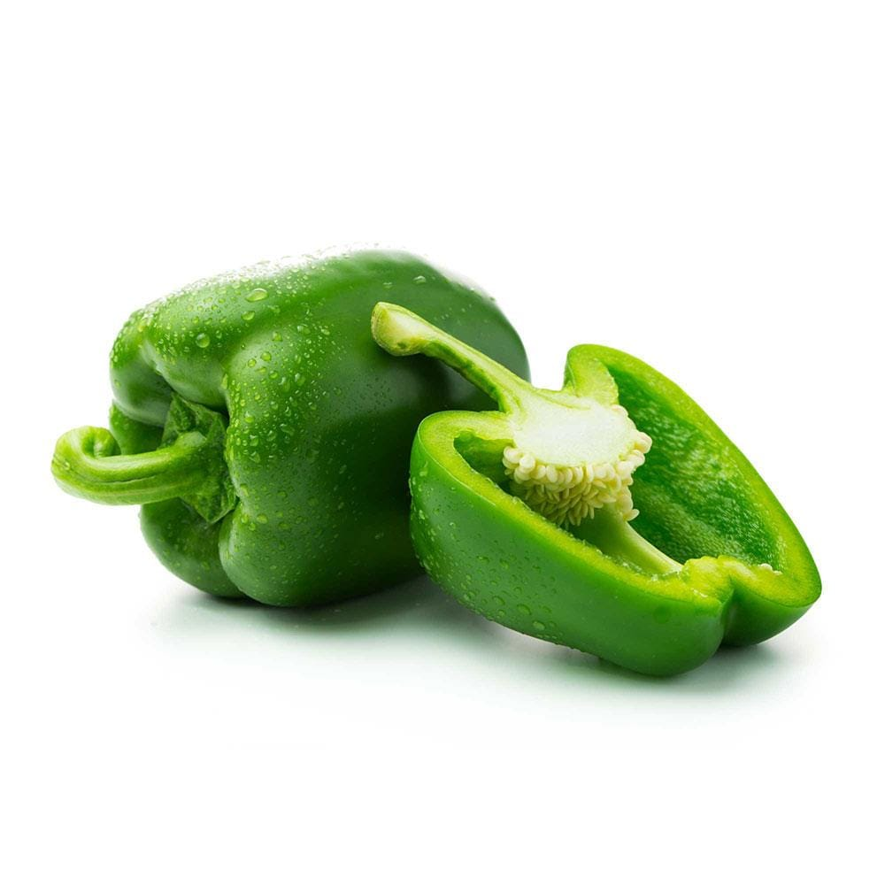Pimentão
Rico em vitamina C e antioxidantes, o pimentão ajuda a fortalecer o sistema imunológico.
Pode ser verde, amarelo ou vermelho.
Curiosidade: os pimentões vermelhos são mais doces que os verdes.
Alho
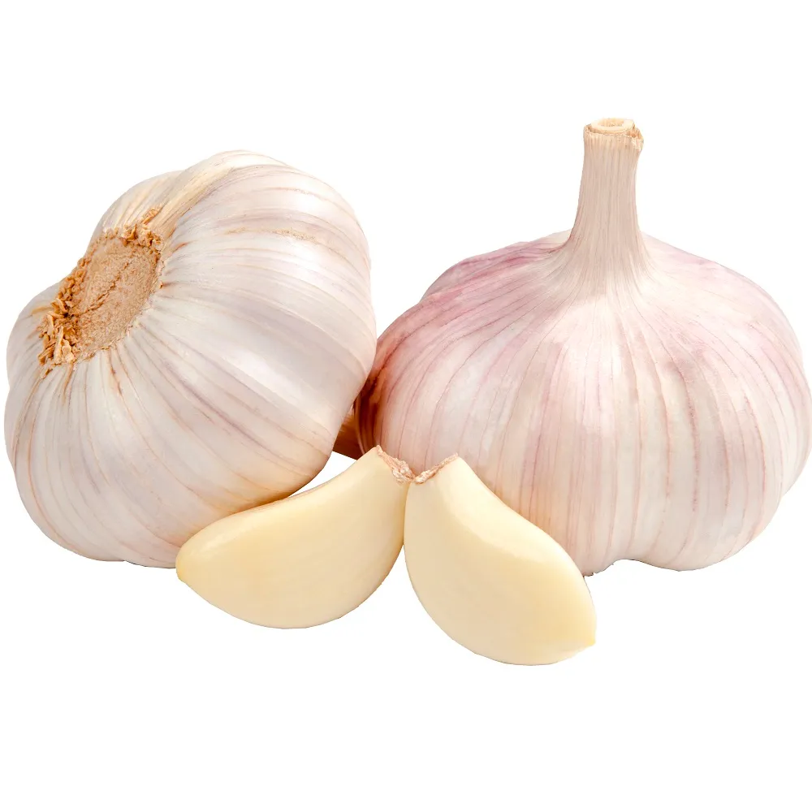Alho
Famoso por suas propriedades anti-inflamatórias e antibacterianas.
Contém compostos sulfurados, que ajudam na imunidade.
Curiosidade: o alho também pode ajudar a controlar a pressão arterial.
Beterraba
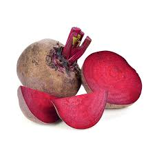Beterraba
Rica em ferro, a beterraba ajuda a prevenir a anemia.
Também contém antioxidantes que protegem as células.
Curiosidade: o suco de beterraba pode ajudar a melhorar o desempenho físico.
Macaxeira
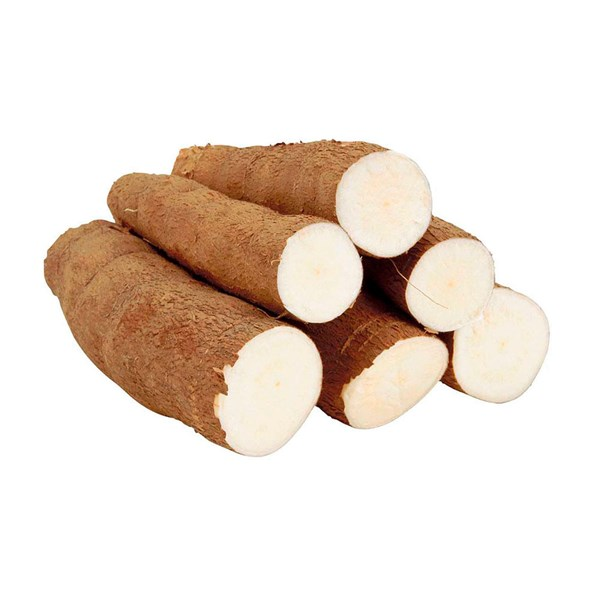Macaxeira
Fonte de carboidratos e energia, a macaxeira é um alimento típico no Brasil.
Contém vitaminas do complexo B.
Curiosidade: dela se faz a famosa farinha de mandioca e a tapioca!
Chuchu
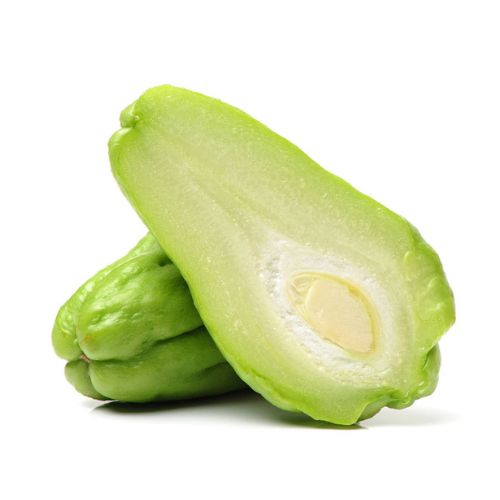Chuchu
É leve e hidratante, com poucas calorias.
Contém vitamina C e minerais como o potássio.
Curiosidade: o chuchu é tão suave que pode ser usado até em sobremesas!
Maxixe
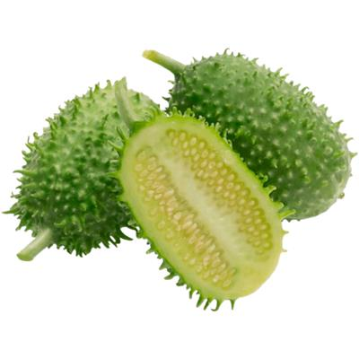Maxixe
Rico em fibras, ajudando na digestão.
Contém vitamina C e ferro.
Curiosidade: é um legume muito usado na culinária nordestina!
Quiabo
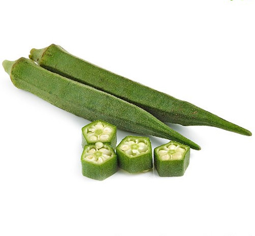Quiabo
Rico em fibras e ajuda a controlar os níveis de açúcar no sangue.
Também contém vitamina C.
Curiosidade: o quiabo tem uma substância viscosa que é ótima para engrossar sopas.
Cenoura

Cenoura
Rica em betacaroteno, que é convertido em vitamina A, essencial para a saúde dos olhos.
Também contém antioxidantes que ajudam a combater o envelhecimento precoce.
Curiosidade: a cenoura originalmente era roxa, sendo a variedade laranja desenvolvida na Holanda no século XVII.